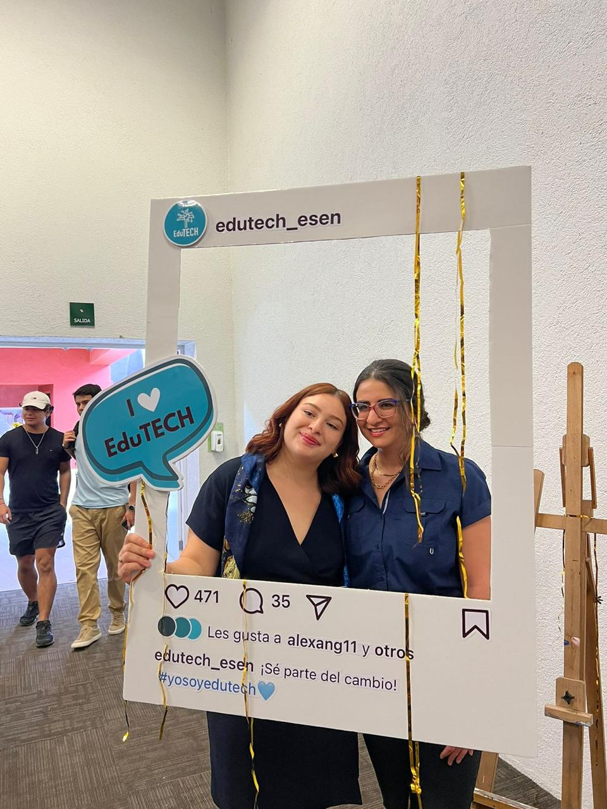
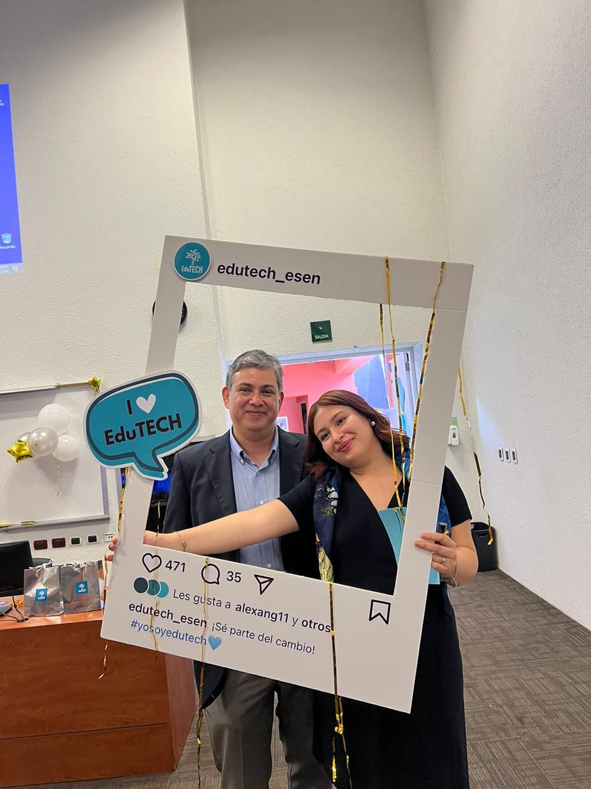

Estudiante de segundo año de Ingeniería en Software y Negocios Digitales. Actual vicepresidenta de EduTech, una asociación dedicada a impartir clases de tecnología en escuelas públicas. Apasionada por la tecnología, el emprendimiento y la comunidad estudiantil.
Habilidades
Lenguajes: HTML, CSS, JavaScript
Desarrollo Web: Creación de sitios web dinámicos, diseño adaptable (responsive), y maquetación eficiente.
Proyectos: Liderazgo en EduTech, tutoría en emprendimiento, organización de charlas tecnológicas y eventos recreativos.
Colaboración: Trabajo en equipo, liderazgo, organización de eventos estudiantiles.
Proyectos
Guía 1: HTML y CSS Básico
Descripción: Fundamentos de HTML y CSS aplicados en varios ejercicios prácticos.
Guía 2: Páginas web más complejas
Descripción: Aplicación de conocimientos en proyectos más elaborados.
Guía 3: Estructuras avanzadas
Descripción: Trabajo con estructuras HTML avanzadas y estilos embebidos.
Guía 4: HTML y CSS avanzado
Descripción: En esta guía se trabajaron varios ejemplos prácticos con HTML y CSS.
Guía 5: Introduccion a JS
Descripción: En esta guía se comienza la introduccion de javascript.
Guía 6: JavaScript
Descripción: En esta guía se explora JavaScript.
Guía 7: Document Object Model (DOM)
Descripción: En esta guía se explora el DOM y cómo interactuar con elementos HTML mediante JavaScript.
Educación
Estudiante de segundo año en ESEN, con especialización en Ingeniería en Software y Negocios Digitales. Me he destacado en cursos de Estructura de datos y progrmacion orientada a objetos, emprendimiento y liderazgo estudiantil.
Referencias Visuales


Esta es una imagen representativa de mi trabajo o perfil.
Soy parte de EduTech, una asociación cuyo objetivo es fomentar la educación en tecnología en escuelas públicas. A través de talleres, clases interactivas y eventos educativos, trabajamos para equipar a los estudiantes con las habilidades necesarias para prosperar en un mundo digital. Como vicepresidenta, estoy comprometida en liderar iniciativas que no solo enseñen conocimientos técnicos, sino que también inspiren a los jóvenes a explorar su potencial en el ámbito tecnológico y a convertirse en agentes de cambio en sus comunidades.